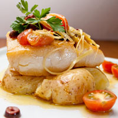

Not only is our food good, it's also good-looking! Our patrons often stop to admire our fare with a quick Instagram before digging in. We've collected a few of our favorite shots here.
We start our day at the crack of dawn to bake our own muffins, bread, and dinner rolls. Loaves not used that day are donated to the local food shelter.

People come from all over to enjoy our lovingly made burgers. We grind our own locally-sourced organic beef and turkey so you know it's fresh and free from fillers and other nonsense. Go for one of our creative topping combos or stick with the classics.

Our chef works with local fisherman to pick the freshest the sea has to offer for our daily seafood special. Our Roast Cod Caponata with Roasted Potatoes is an old favorite with our regulars.

Our locally-sourced chicken is lightly battered to create an intensely golden crispy outer while retaining a juicy piece of chicken inside. This pairs perfectly with our golden crispy fries.

Fries are a staple that we take pride in. Our fries are hand cut with love and fried in beef tallow, accomodations are taken for those who may be vegetarian/vegan. We want everyone to enjoy our golden fries equally.

The most perfect Tabouleh, using fresh herbs and vegetables from our in house garden, accompanied by specially selected bulgar wheat. This dish is sure to be tasty to everyone, not just non-meat eaters.